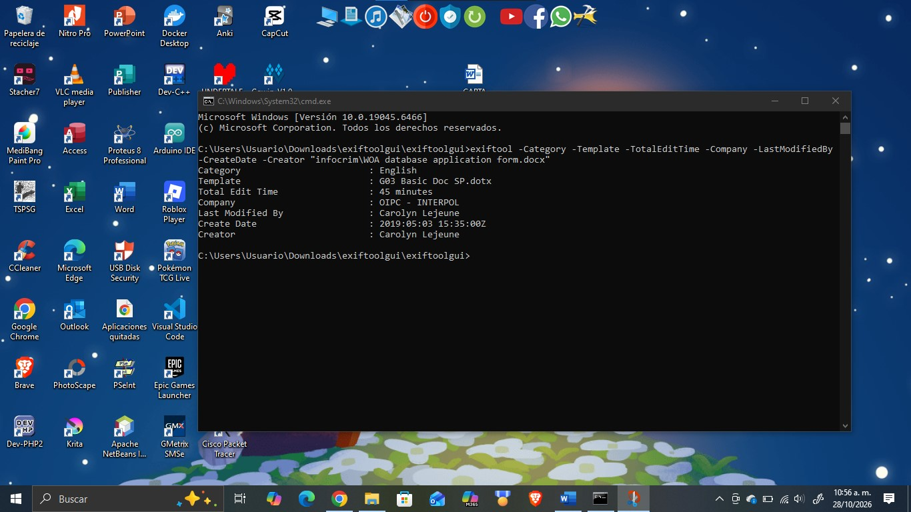
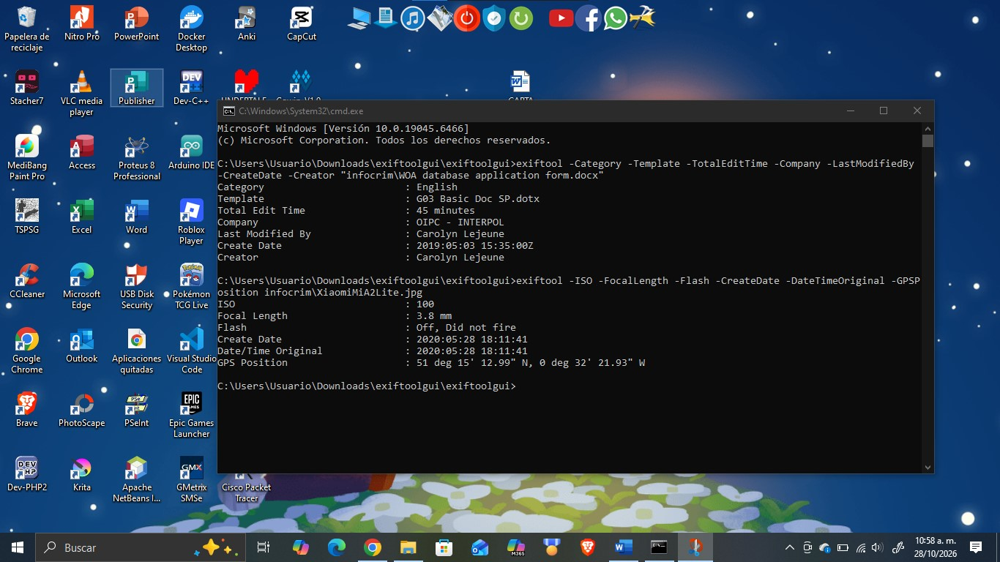
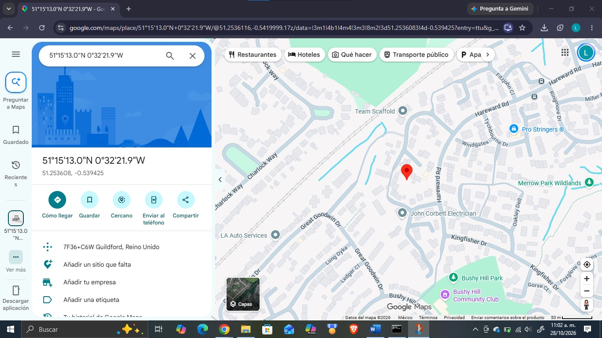
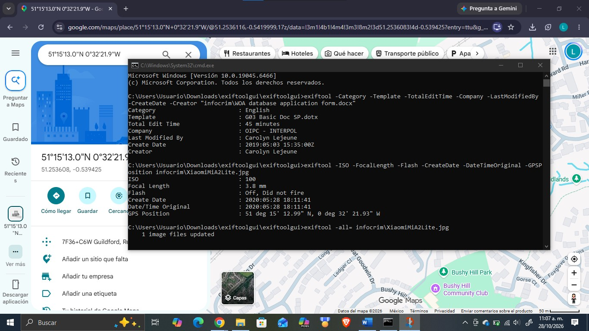
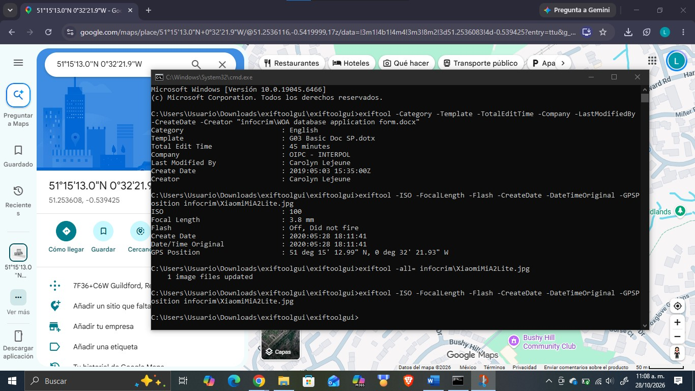
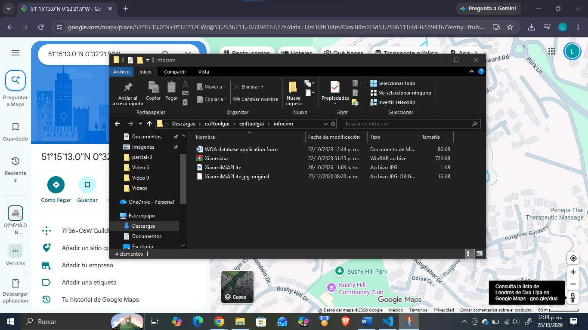

Objetivo
El presente reporte documenta la Actividad 15, «La fotografía como testigo: extracción de metadatos GPS para geolocalización». El objetivo es utilizar la herramienta ExifTool para extraer e interpretar los metadatos de dos ficheros de muestra: un documento de Word atribuido a INTERPOL (WOA database application form.docx) y una fotografía en formato JPG (XiaomiMiA2Lite.jpg). Con ellos se responde el cuestionario de la actividad, se ubica en un mapa el lugar donde se tomó la fotografía y, por último, se eliminan los metadatos de la imagen.
Esta práctica se relaciona directamente con la seguridad informática y el análisis forense digital: los metadatos son «datos sobre los datos» que se guardan de forma automática dentro de un archivo y que pueden revelar quién lo creó, con qué programa o dispositivo, cuándo y, en el caso de las fotografías, dónde. Esa información es muy útil en una investigación, pero también representa un riesgo de privacidad cuando un archivo se comparte sin limpiarse.
Desarrollo
Parte I. Metadatos del documento de INTERPOL
Para el fichero de INTERPOL se consultaron únicamente las etiquetas solicitadas en el cuestionario, indicándolas como argumentos de ExifTool y escribiendo entre comillas el nombre del archivo porque contiene espacios (figura 1).
exiftool -Category -Template -TotalEditTime -Company -LastModifiedBy -CreateDate -Creator "infocrim\WOA database application form.docx"
Con base en la salida anterior se responde la Parte I del cuestionario (tabla 1).
| N.º | Pregunta | Respuesta | Etiqueta de ExifTool |
|---|---|---|---|
| 1 | ¿Cómo categorizó el archivo INTERPOL? | English | Category |
| 2 | ¿Qué template se utilizó para elaborar el archivo? | G03 Basic Doc SP.dotx | Template |
| 3 | ¿Cuál fue el tiempo total de edición? | 45 minutos | Total Edit Time |
| 4 | ¿Qué compañía es propietaria del fichero? | OIPC - INTERPOL | Company |
| 5 | ¿Quién realizó la última modificación? | Carolyn Lejeune | Last Modified By |
| 6 | ¿Cuál es la fecha de creación? | 3 de mayo de 2019, 15:35:00 (UTC) [2019:05:03 15:35:00Z] | Create Date |
| 7 | ¿Quién es el creador del fichero? | Carolyn Lejeune | Creator |
Parte II. Metadatos y geolocalización de la fotografía
Para la fotografía se consultaron las etiquetas ISO, FocalLength, Flash, CreateDate, DateTimeOriginal y GPSPosition (figura 2).
exiftool -ISO -FocalLength -Flash -CreateDate -DateTimeOriginal -GPSPosition infocrim\XiaomiMiA2Lite.jpg
| N.º | Pregunta | Respuesta | Etiqueta de ExifTool |
|---|---|---|---|
| 1 | ¿Cuál fue el ISO utilizado? | ISO 100 | ISO |
| 2 | ¿Cuál es la longitud focal de la cámara? | 3.8 mm | Focal Length |
| 3 | ¿Se usó flash para la captura? | No. «Off, Did not fire»: el flash estaba apagado y no se disparó | Flash |
| 4 | ¿Cuál es la fecha de creación del archivo? | 28 de mayo de 2020, 18:11:41 [2020:05:28 18:11:41] | Create Date / Date/Time Original |
| 5 | ¿Cuáles son los datos de ubicación GPS? | 51° 15' 12.99" N, 0° 32' 21.93" W | GPS Position |
Sobre la pregunta 1, conviene precisar que el ISO no es una apertura sino la sensibilidad del sensor a la luz; la apertura del diafragma corresponde a otra etiqueta (FNumber). El valor ISO 100 es el más bajo y es típico de una escena con buena iluminación, lo que es coherente con que el flash no se haya disparado. Además, la fecha de creación coincide con la de captura original (Date/Time Original), por lo que el archivo no parece haber sido alterado desde que se tomó la foto.
Para ubicar la fotografía, las coordenadas en grados, minutos y segundos (DMS) se convierten a grados decimales con la fórmula grados + minutos/60 + segundos/3600, aplicando signo negativo al hemisferio sur o al oeste:
| Coordenada | Cálculo | Decimal | Referencia |
|---|---|---|---|
| Latitud | 51 + 15/60 + 12.99/3600 | 51.253608 | N (norte): positiva |
| Longitud | 0 + 32/60 + 21.93/3600 | -0.539425 | W (oeste): negativa |
Al introducir las coordenadas en Google Maps (figura 3), el punto queda en la dirección con código Plus Code 7F36+C6W, en Guildford (condado de Surrey, Inglaterra, Reino Unido). Es una zona residencial situada entre Hareward Road y Great Goodwin Drive, muy cerca de Bushy Hill Community Club, Bushy Hill Park y Merrow Park Wildlands.

Eliminación de los metadatos
Para eliminar todos los metadatos de la muestra se utilizó la opción -all= de ExifTool, que asigna un valor vacío a todas las etiquetas del archivo (figura 4). ExifTool respondió «1 image files updated», lo que confirma que el archivo fue modificado.
exiftool -all= infocrim\XiaomiMiA2Lite.jpg
Para comprobar la limpieza se repitió la misma consulta de la Parte II (figura 5). Esta vez ExifTool no devolvió ningún valor para ISO, longitud focal, flash, fechas ni posición GPS, de modo que la fotografía ya no revela cuándo, con qué parámetros ni dónde fue tomada.


Resultados
Los resultados obtenidos con ExifTool se resumen a continuación. Del documento de INTERPOL se obtuvo que fue creado el 3 de mayo de 2019 por Carolyn Lejeune, quien también lo modificó por última vez, a partir de la plantilla «G03 Basic Doc SP.dotx», con una categoría «English», una compañía registrada «OIPC - INTERPOL» y un tiempo total de edición de 45 minutos. Estos datos permiten atribuir el documento a una persona y a una organización sin necesidad de leer su contenido.
De la fotografía se obtuvo que fue tomada el 28 de mayo de 2020 a las 18:11:41 con ISO 100, una longitud focal de 3.8 mm y sin flash. Sus coordenadas (51° 15' 12.99" N, 0° 32' 21.93" W; 51.253608, -0.539425) corresponden a una zona residencial de Guildford, Surrey, en el Reino Unido. Tras ejecutar exiftool -all=, una nueva consulta comprobó que esos datos ya no están presentes en el archivo.
Conclusión
La actividad mostró que los metadatos pueden aportar evidencia valiosa sin abrir el contenido de un archivo: en el documento identifican a su autor, su organización, la plantilla usada y los tiempos de edición, y en la fotografía permiten reconstruir cuándo y dónde se tomó, y con qué parámetros de cámara. ExifTool resultó una herramienta sencilla y potente para consultar solo las etiquetas necesarias.
Desde el punto de vista de la seguridad informática, el ejercicio también deja una lección de privacidad: cualquier foto o documento compartido puede filtrar datos personales, como la ubicación de un domicilio, si no se limpia antes. Por ello, es recomendable eliminar los metadatos (por ejemplo, con exiftool -all=, sin olvidar borrar la copia _original) o desactivar el etiquetado GPS en la cámara antes de publicar archivos. Como siguiente paso, la misma técnica puede aplicarse a otros tipos de archivo, como PDF o video, y combinarse con otras fuentes abiertas para verificar la autenticidad de una evidencia.
Referencias bibliográficas
- CIPA. (2019). Exchangeable image file format for digital still cameras: Exif Version 2.32 (CIPA DC-008-Translation-2019). Camera & Imaging Products Association. https://www.cipa.jp/std/documents/e/DC-008-Translation-2019-E.pdf
- Google. (s. f.). Google Maps [Servicio de mapas en línea]. https://www.google.com/maps
- Google. (s. f.). Open Location Code (Plus Codes). https://maps.google.com/pluscodes/
- Harvey, P. (s. f.). ExifTool by Phil Harvey [Software]. https://exiftool.org/
- Harvey, P. (s. f.). ExifTool Tag Names. https://exiftool.org/TagNames/index.html
- Harvey, P. (s. f.). ExifTool Application Documentation. https://exiftool.org/exiftool_pod.html